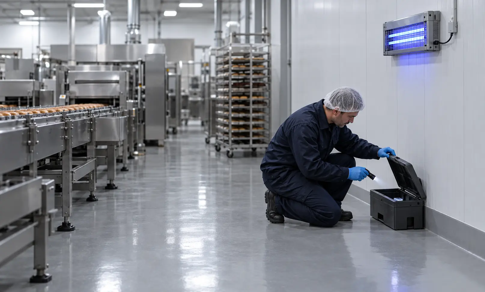
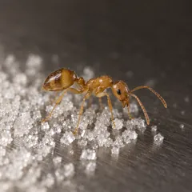
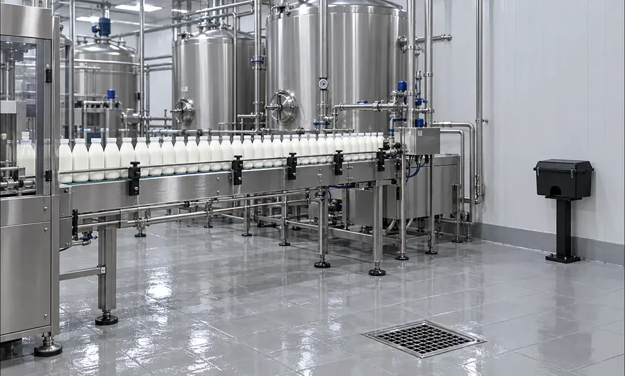
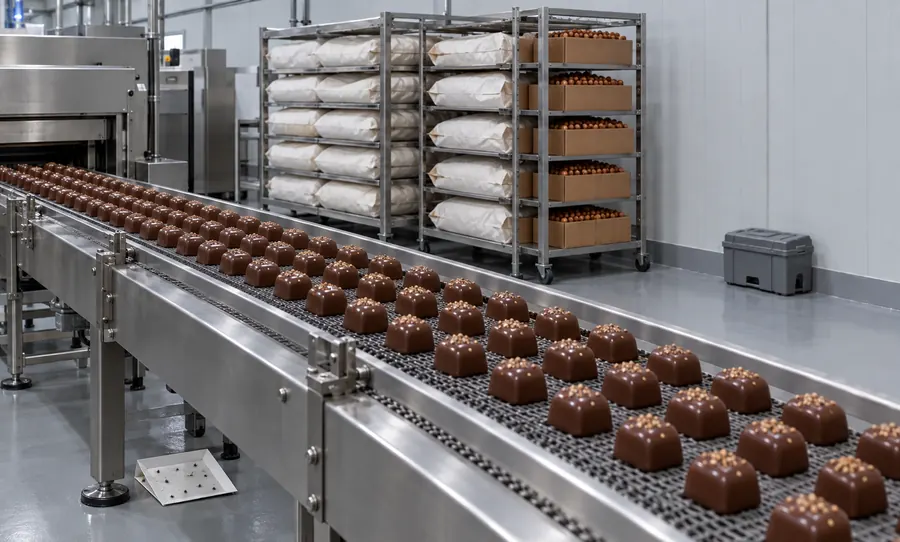
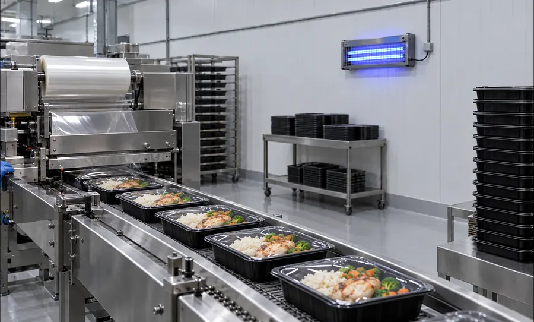

2 раза в месяц
По СанПиН 3.3686-21 пищевая промышленность — объект особого эпидемиологического значения (п. 98). Обследования на насекомых — не реже 2 раз в месяц (п. 101).

Контроль вредителей на пищевом предприятии по системе IPM: точки контроля, визиты по графику смен, химия — только по результатам мониторинга. Документы ведём так, чтобы их можно было показать Роспотребнадзору, аудитору сертификации и торговой сети.
Срочные выезды: 24/7
0 из 5
Чего-то не хватает — на бесплатном обследовании покажем, что добавить и в каком порядке.
Заказать бесплатное обследование2 раза в месяц
По СанПиН 3.3686-21 пищевая промышленность — объект особого эпидемиологического значения (п. 98). Обследования на насекомых — не реже 2 раз в месяц (п. 101).
Каждый месяц
Дератизацию на таких объектах проводят по результатам ежемесячной оценки (п. 110 СанПиН 3.3686-21).
Раздел 12
ГОСТ Р 54762-2011 / ISO/TS 22002-1, на который опирается FSSC 22000: ответственный, документированная программа, целевые вредители, перечень средств по зонам.
ТР ТС 021/2011 (ст. 14) требует, чтобы производственные помещения были защищены от проникновения грызунов и насекомых.
Перед стартом: бесплатное обследование → программа и схема точек → установка точек контроля. Для крупных площадок и строгих стандартов частоту визитов увеличиваем в программе.
| Документ | Кому нужен |
|---|---|
| Программа пест-контроля для плана ХАССП | Отдел качества, аудитор |
| Оценка пест-риска по зонам | Аудитор сертификации, торговая сеть |
| Схема точек контроля с номерами | Все проверяющие |
| Журнал осмотров и учёта численности | Роспотребнадзор, аудитор |
| Акты выполненных работ | Бухгалтерия, Роспотребнадзор |
| Перечень средств с СГР и зонами применения | Технолог, аудитор |
| Ежемесячный отчёт с трендами | Руководство, отдел качества |
| Лицензия и удостоверения специалистов | Все проверяющие |
Оформляем под ваш стандарт — ISO 22000, FSSC 22000, BRCGS, IFS или чек-лист торговой сети.

Периметр, рампа, склады. Дератизация пищевого производства: станции снаружи, ловушки внутри.

Тёплые зоны у печей, моечные, кабель-каналы. Дезинсекция на пищевом производстве — точечно, в санитарное окно.

Отходы, трапы, сладкое и бродящее сырьё. Ищем места выплода; световые ловушки для мух, приманочные — для дрозофил.

Мука, крупы, орехи, сухофрукты. Феромонные ловушки и контроль входящих партий.

Пекарни и кондитерские: сладкое сырьё, тёплые полости в стенах.

Кровля, рампа, склад: закрытие проёмов и противоприсадочные системы.

Грызуны у сырья и отходов, мухи на приёмке.

Влажные зоны, трапы и стоки: дрозофилы, мухи, тараканы.

Мука и тепло: пищевая моль, тараканы у печей, грызуны на складе.

Сахар, орехи, фрукты: муравьи, моль, дрозофилы.

Напитки, готовая еда, полуфабрикаты.
Обследование, программа и схема точек, запуск визитов, документы к дате аудита.
Осмотр партий и мест хранения, феромонные ловушки, корректирующие действия в отчёте.
Поиск мест выплода в трапах и стоках, санитарные рекомендации, ловушки, контроль по журналу.
Типовые ситуации, а не описания конкретных клиентов.
Цена зависит от:
Визиты по графику, расходники для точек контроля, журналы, ежемесячный отчёт, консультации отдела качества.
Расчёт — после бесплатного обследования. Сумма абонентской платы фиксируется в договоре.
Рассчитать для моего производстваРазовая обработка от крыс и насекомых в производственных зданиях — цена после осмотра.
СанПиН 3.3686-21: обследования на насекомых не реже 2 раз в месяц, по грызунам — ежемесячная оценка. ТР ТС 021/2011: защита помещений от проникновения вредителей. Для систем ХАССП и FSSC 22000 — раздел 12 ГОСТ Р 54762-2011.
Осмотры, ловушки и профилактика — без остановки. Если в цехе нужна обработка, её проводят в согласованное окно — санитарный день, пересменка, остановка линии — по инструкции к средству.
Не реже 2 раз в месяц. Точный график — в программе, с учётом смен и зон риска.
Программу, схему и отчёты оформляем под ваш стандарт и чек-лист аудитора. Результат аудита зависит и от состояния производства, поэтому замечания передаём сразу, а не в конце месяца.
Только с СГР и инструкцией. Перечень по зонам согласуем с отделом качества и вносим в программу.
Да. С 1 марта 2025 года услуги дезинфекции, дезинсекции и дератизации лицензируются. У ООО «Центр дезинфекционных услуг» действующая лицензия № Л064-00111-77/01942445 — запись можно проверить в реестре лицензий Роспотребнадзора.
Принимаем текущую схему точек и журналы и переходим без разрыва в документах.
Пест-менеджер осмотрит зоны риска, точки контроля и папку документов. После выезда вы узнаете, что исправить до ближайшей проверки, и получите расчёт обслуживания.